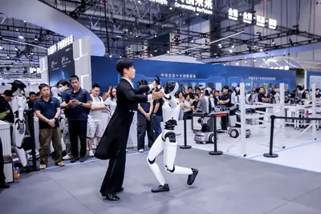
其他AI 每日新聞彙整
全部主題
其他
2 家媒體報導robothiphi2026
北京機器人大會揭風向 人形機器人百般武藝成分水嶺
「2026北京世界機器人大會（WRC）」接力在「世界人工智能大會（WAIC）」後登場，同樣以具身智慧為核心，更聚焦在機器人。
- DIGITIMES 北京機器人大會揭風向 人形機器人百般武藝成分水嶺
- IT之家 诺亦腾机器人发布 HiPHI，开源 617.5 小时高精度人体运动数据
- IT之家 AI 机器人进厨房：橡鹿机器人全球首发三款烹饪机器人产品
2 家媒體報導opensourcehuggingface
消息称 AI 初创公司 Hugging Face 探索出售，估值达 130 亿美元
IT之家 8 月 24 日消息，据 Business Insider 当地时间周日援引知情人士消息报道，人工智能初创公司 Hugging Face 一直在探索出售事宜，该交易对公司的估值可能达到 130 亿美元 （IT之家注：现汇率约合 876.6 亿元人民币） 或更高。 这家总部位于纽约的公司托管开源大语言模型和数据集，据报道一直在与一家银行合作，以评估竞购者的兴趣。 2023 年，Hugging Face 在一轮由科技巨头 Salesforce、Alphabet 旗下谷歌以及英伟达领投的融资中估值达 45 亿美元 （现汇率约合 303.44 亿元人民
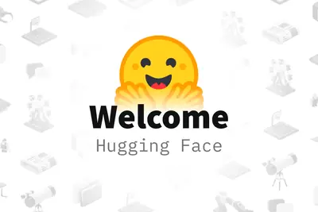
美国得州州长阿博特：AI 数据中心遭民众反对实属咎由自取
IT之家 8 月 24 日消息，在得克萨斯州州长格雷格 · 阿博特看来，人工智能行业正在自食其果。 阿博特当地时间周日在美国广播公司（ABC）《本周》（This Week）节目中表示，美国民众对人工智能数据中心的尖锐批评是应该的。 “他们基本上是在为自己造成的问题自掘坟墓，这就是为什么他们遭到了应得的抵制。”阿博特说。 科技公司依赖数据中心为其人工智能产品提供算力，但它们围绕数据中心的宣传并未奏效。在全美各地，美国人正在集结起来反对人工智能数据中心，这些设施造价高达数十亿美元，占地数百英亩。许多人担心这些庞大的设施将如何影响环境、公用事业价格、水资源和噪

regulation
OpenAI CEO 奥尔特曼：担心人工智能会被少数强势主体掌控
IT之家 8 月 24 日消息，OpenAI 首席执行官萨姆 · 奥尔特曼表示，他担心人工智能终有一天会被少数公司、模型或个人所控制，让绝大多数消费者在技术如何塑造世界这个问题上没有发言权。 “正确的做法是，我们希望人们能够深度掌控未来，”奥尔特曼在当地时间周日发布的 David Senra 播客节目中说，“社会和模型将共同进化。” 奥尔特曼说他担心的另一种可能性是人工智能挣脱人类控制者的束缚。矛盾的是，奥尔特曼表示，对后一种可能性的恐惧可能导致前一种可能性的实现。 “有很多人对这些风险的严重程度感到非常紧张，被这种情绪所左右，觉得有必要保护世界，”他说

datacentercomputedayone
新加坡打造「活體神經元」伺服器，活細胞變身 AI 算力破解耗電痛點
新加坡國立大學醫學院聯手資料中心營運商 DayOne 及澳洲生物運算公司 Cortical Labs，在楊潞齡 […]
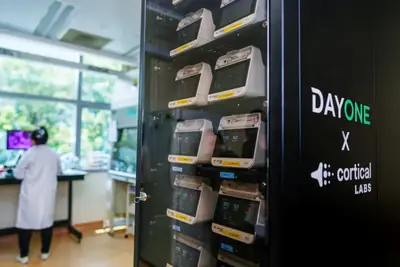
- 科技新報 TechNews 新加坡打造「活體神經元」伺服器，活細胞變身 AI 算力破解耗電痛點
samsunghbmelectronics
廠還沒蓋用電先拉警報 記憶體雙雄光州投資衝向「6＋α」座晶圓廠
人工智慧（AI）記憶體榮景持續升溫，三星電子（Samsung Electronics）與SK海力士（SK Hynix）對南韓西南部半導體產能的「胃口」，傳也進一步擴大。繼先前規劃在光州軍用機場一帶各興建2座、合計4座晶圓廠（Fab）後，韓媒最新消息指出，兩家公...
- DIGITIMES 廠還沒蓋用電先拉警報 記憶體雙雄光州投資衝向「6＋α」座晶圓廠
- DIGITIMES 晶片躺著賺、手機虧錢賣 三星同屋簷下的美麗與哀愁
cpohbmsk-hynix
SK海力士押注CPO延伸記憶體介面 HBM變系統資源不被取代
共同封裝光學（CPO）正從資料中心網路進一步向AI晶片內部延伸。目前CPO主要用於晶片之間的高速互連，而SK海力士（SK Hynix）提出的下一步，是繼續將這條光纖鏈路向內推進，並給出更長期的路線「將光互連一直推進到記憶體介面。」<br /...
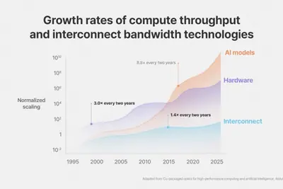
- DIGITIMES SK海力士押注CPO延伸記憶體介面 HBM變系統資源不被取代
- DIGITIMES 評析：SK海力士HBM、HBF再到CPO 左踢記憶體牆、右打頻寬牆
core
先進封裝載板升級遇物理極限 陶瓷核心層材料崛起比拚玻璃
隨著AI硬體對效能要求提升，不僅晶片封裝體積變大、複雜度提高，連帶封裝載板也面臨大尺寸、高層數、低翹曲、高精度等挑戰。然而，單純靠傳統製程技術的升級，正逐漸走向物理極限，也讓業界開始思考次世代核心層（core）材料的可能性。
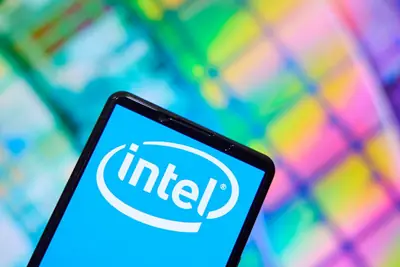
- DIGITIMES 先進封裝載板升級遇物理極限 陶瓷核心層材料崛起比拚玻璃
aidccompute
北部AIDC電力吃緊如何化解？ 台電提倡以資訊流取代電力流
隨著AI晶片功率持續攀升，伺服器機櫃正朝向MW等級發展。在「電力即算力」的趨勢下，不僅提高電力電子的重要性，也讓整體電力系統面臨大幅升級需求。
- DIGITIMES 北部AIDC電力吃緊如何化解？ 台電提倡以資訊流取代電力流
aidccompute
專訪鴻海AIDC吳國璽與吳政達 1》AI工廠改寫採購邏輯 主權算力催生在地整合需求
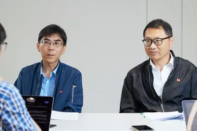
121sk-hynixnvidia
【動物農莊】鴿們聊SK海力士賺錢 NVIDIA半年貢獻121億美元
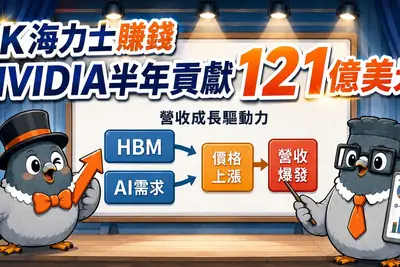
- DIGITIMES 【動物農莊】鴿們聊SK海力士賺錢 NVIDIA半年貢獻121億美元
e2enissan
日產、本田加速轉向E2E自動駕駛技術 結盟AI與軟體夥伴搶救研發進度
日本日產汽車（Nissan）與本田汽車（Honda）正加速轉向端到端（E2E）自動駕駛技術，並透過結盟AI新創、軟體供應商與晶片業者的模式，追趕已在量產車導入E2E技術的美國與中國車廠。
- DIGITIMES 日產、本田加速轉向E2E自動駕駛技術 結盟AI與軟體夥伴搶救研發進度
hbmcompute
AI基建投資帶旺台廠接單 電力瓶頸凸顯淨零科技需求
各國建置AI基礎建設，雲端業者擴大資本支出，使台灣以AI伺服器為主的資訊通信產品7月外銷訂單年增率近9成，晶圓代工和記憶體年增亦逾7成。然而，各先進國家的廠商在投入AI基礎建設的過程中已遇電力不足瓶頸，這證明AI算力和淨零科技勢必要同步發展，否則AI算力投資...
- DIGITIMES AI基建投資帶旺台廠接單 電力瓶頸凸顯淨零科技需求
noetrassdsoftbank
日本AI國家隊Noetra瓶頸在SSD 5年後挑戰真實世界模型
由軟銀（SoftBank）、NEC、Sony集團、本田（Honda）等日本44家公司出資，獲得日本經產省等單位總額約1兆日圓（約63億美元）支援的AI開發公司Noetra，目標是開發日本製實體AI，預計在5年內建構真實世界模型。
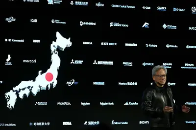
- DIGITIMES 日本AI國家隊Noetra瓶頸在SSD 5年後挑戰真實世界模型
nvidiacompute
【漫圖秒懂】NVIDIA當起「AI媒人」 一手牽線全球算力直奔北歐極地
- DIGITIMES 【漫圖秒懂】NVIDIA當起「AI媒人」 一手牽線全球算力直奔北歐極地
datacenter
資料中心成第四次工業革命核心 應材余定陸揭半導體競爭新標準
對於當前人工智慧（AI）發展，應用材料（Applied Materials）副總裁暨台灣區總裁余定陸近日分享，他從工業革命的演進切入。第一次工業革命由蒸汽動力取代大量人力，第二次透過電力進入大規模生產，第三次則由電腦及資訊系統取代大量人工工作，現在進入第四次工業革...
- DIGITIMES 資料中心成第四次工業革命核心 應材余定陸揭半導體競爭新標準
robot
AI 寫給 AI 看、AI 回給 AI 看：溝通外包 AI 使人類陷入「機器人輪迴」
人工智慧正從協助人類做事，走向替人類彼此溝通。最新報導，聊天機器人介入越來越多工作、學校與私人互動，甚至出現「 […]
- 科技新報 TechNews AI 寫給 AI 看、AI 回給 AI 看：溝通外包 AI 使人類陷入「機器人輪迴」
twitchamazonminton
因使用主播内容训练亚马逊 AI，Twitch 面临集体诉讼
IT之家 8 月 24 日消息，Twitch 正面临一场集体诉讼，原因是其将主播的内容用于训练亚马逊的 AI。 一名 Twitch 主播已针对该平台及其母公司亚马逊提起拟议的集体诉讼，声称他的直播内容以及无数其他创作者的内容，在未经同意、也未获得报酬的情况下被用于生成式 AI 训练。 据 Courthouse News 报道，原告 Warren Pandiscia 是一位拥有约 1000 名粉丝的 Twitch 创作者，于上周在加州北区法院提交了长达 37 页的诉状。诉状指控 Twitch 和亚马逊在未获得适当授权的情况下复制了大量主播视频，这违反了创作
academyclaudeagent
免費開放 AI 課程 Claude Academy 上線，新手到進階教學一應俱全
Anthropic 推出免費學習平台 Claude Academy，網址為 academy.claude.com，內容涵蓋 AI 入門知識到進階代理協作技巧，不論是還在摸索 AI 是什麼，還是每天都在用 Claude 的人，都能找到對應的學習路徑。
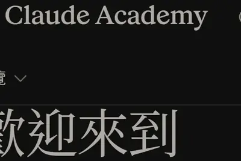
hilightpixelled
谷歌 Pixel 11 Pro 手机拆解揭示 HiLight 背后的秘密：硬件为 8 颗 RGB LED
IT之家 8 月 24 日消息，随着 Pixel 11 系列手机的发布，谷歌推出了一个新的后置视觉提醒环，名为 HiLight，正式取代了前几代 Pixel 上的红外温度传感器。 IT之家注意到，该硬件直接围绕后置相机条上的闪光灯构建，并覆盖全系列机型。目前，HiLight 作为一款专用指示灯，在 Gemini 助手激活时脉冲闪烁，当手机屏幕朝下放置时，会为来自收藏联系人的来电发出亮光。尽管谷歌在发布会上宣布该功能将支持短信，但这一能力在发布时缺失。此外，HiLight 不支持第三方应用集成，这意味着用户无法为单个应用分配特定颜色，以便一眼识别通知来源。
amdtaalasagent
AMD 收購 Taalas，AI 推論放眼異質運算與模型專用晶片時代
AMD 6 日宣布收購加拿大 AI 晶片新創 Taalas，補強專用模型推論。生成式 AI、AI 代理與即時 […]
- 科技新報 TechNews AMD 收購 Taalas，AI 推論放眼異質運算與模型專用晶片時代
applevisionpoolside
【科技早餐】【科技早餐】NVIDIA 傳砸 60 億美元搶 AI 技術，Apple 裁減逾 200 職位波及 Siri、Vision Pro
【科技早餐】今天精選 8 則國內外重要科技新聞。 ＊NVIDIA 傳砸 60 億美元取得 Poolside 技術授權，擬延攬 109 名員工 《彭博》報導，NVIDIA 將支付 60 億美元，取得 AI 新創 Poolside 模型開發軟體的非獨家授權，並向 109 名員工提出工作邀請。這套軟體主要用於打造及訓練 AI 模型，Poolside 在完成授權後仍可繼續使用相關技術，也能授權其他企業使用。 除了技術授權費，NVIDIA 還將另外投資 Poolside 10 億美元。Poolside 的三名創辦人將繼續留任，公司也會維持獨立營運，整體交易並非直接
anthropiccheapermodel
Anthropic’s best AI model struggles to attract users as cheaper tools thrive
Anthropic’s best AI model struggles to attract users as cheaper tools thrive A few interesting numbers in this FT story gathered from "people with knowledge of the matter": Anthropic's "annualized revenue" for July is up to $65bn - it was $47bn in May, and I collected more histor
- Simon Willison Anthropic’s best AI model struggles to attract users as cheaper tools thrive
- Simon Willison Quoting Drew Breunig
alphastealthmodel
Who’s behind the new ‘stealth model’ Ox Alpha?
A mysterious new AI model called Ox Alpha has driven certain corners of the internet into a frenzy of speculation.
- TechCrunch AI Who’s behind the new ‘stealth model’ Ox Alpha?
linkdazesmartcalendar
Linkdaze’s smart calendar is built to run a household, not just track a schedule
Linkdaze's smart digital calendar stands out for not putting its features behind a paywall, including an AI meal planner tool.

flocksurveillancefaces
Flock CEO calls for ‘compromise’ as surveillance company faces growing backlash
Flock Safety faces a growing public outcry over concerns that its surveillance technology could be misused.
starcloudgpugoogle
获英伟达投资，美国初创 Starcloud 研发 GPU 卫星欲建太空数据中心
IT之家 8 月 23 日消息，据外媒 Interesting Engineering 今天报道，美国初创公司 Starcloud 已完成 2.5 亿美元 （IT之家注：现汇率约合 16.86 亿元人民币） A 轮扩展融资，估值达到 23 亿美元 （现汇率约合 155.09 亿元人民币） 。这笔新资金将用于研发配备高性能 GPU 的卫星，为 AI 提供算力。 据报道，本轮融资由 Manhattan West 领投， 新投资者涵盖英伟达 、 思科等 ，现有投资方包括 Benchmark 和 EQT。 Starcloud 计划将数据中心从地球搬到太空。 这家
legaltrainmodels
Is it legal to train AI models on copyrighted books? It’s complicated
Most published authors have, without their knowledge or consent, contributed to the development of the same AI tools that threaten to undermine their livelihoods. That seems illegal, right?
chatgptopenai
OpenAI 推出青少年版 ChatGPT，多名儿童安全专家质疑安全机制透明度
IT之家 8 月 23 日消息，OpenAI 本周推出了 ChatGPT 青少年版，专门面向年轻用户，并通过年龄识别机制限制部分功能。 对此，外媒 Engadget 采访了多名儿童安全专家，他们对 ChatGPT 青少年版的评价并不一致。但所有人都认为，在向家长和年轻人推荐之前，这套系统还需要 接受大量独立测试 ，OpenAI 必须更加透明地说明安全机制究竟如何运作。 为家庭提供娱乐和科技产品建议的 Common Sense Media 公司 AI 与数字评估负责人罗比 · 托尼认为：“OpenAI 这次做出了一些非常重要的承诺， 但必须拿出证据， 证明
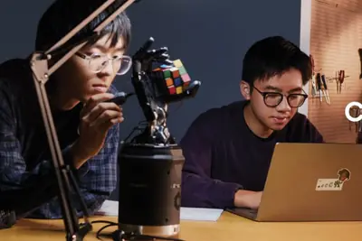
400ceo
安世中国 CEO 张秋明：过去 11 个月已交付超 400 亿颗芯片
8 月 23 日晚间消息，在安世中国新品全球发布会上，安世中国首席执行官张秋明发表演讲。张秋明透露， 过去 11 个月以来，安世中国已经向全球上千家客户交付超过 400 亿颗芯片 。 张秋明表示，作为全球功率半导体龙头之一，我们的核心业务和持续创新让安世的产品组合在工艺和性能效率上被公认为行业标杆，但百年老店也意味着我们要直面历史的包袱。当全球供应链的变局如海啸般袭来，当技术封锁的阴霾笼罩，安世中国没有选择退缩，更没有选择被动等待，我们选择了一条最艰难的路，主动重建。 张秋明称，为了打破僵局，安世中国开启了市场结构的本土化战略转型，我们将目光锁定在 AI
baidu2026
百度：没有增发配售计划
IT之家 8 月 23 日消息，据科创板日报消息，百度相关负责人回应称， 百度没有增发配售计划 ，现有资金及经营现金流足以支持既定业务发展。 截至二季度末，百度现金及投资总额达 2,831 亿元，经营现金流连续四个季度为正。与此同时，百度 AI 云基础设施收入同比增长 50%，GPU 云收入同比增长 283%， AI 业务收入占一般业务收入的 50% 。 据IT之家此前报道， 百度 2026 财年第二财季 （2026 年 4 月～2026 年 6 月）数据显示： 营业总收入：313 亿元，同比下降 4.4%，环比下降 2.49% 归母净利润：23.19
- IT之家 百度：没有增发配售计划
regulation
挪威呼吁校园内禁止使用 AI 眼镜
IT之家 8 月 23 日消息，据 CCTV 国际时讯援引挪威广播公司报道，挪威负责中小学教育及幼教事务的大臣卡丽 · 内萨 · 诺尔敦当地时间 8 月 22 日呼吁，挪威各地方政府和学校应通过学校规章制度， 禁止在校园内使用 AI 眼镜 。 据悉，挪威政府目前限制在学校场景下使用 AI，要求小学 1 至 7 年级学生 原则上不应使用生成式 AI ；初中阶段则“应 逐步、谨慎地引入生成式 AI ”。 延伸阅读 据IT之家了解，早在 2026 年 6 月，挪威政府就已宣布，从 8 月下旬新学期开始，在小学（1-7 年级，6-13 岁）全面禁止使用生成式 A
- IT之家 挪威呼吁校园内禁止使用 AI 眼镜
spiralai
因预约人数远超预期，《莱莎的炼金工房》衍生 AI 聊天游戏延期上线
IT之家 8 月 23 日消息，据日媒 4Gamers 报道，由光荣特库摩游戏授权、SpiralAI 开发的 AI 聊天游戏《RyzaChat:AI 与莱莎共同创造只属于你的盛夏梦幻故事》将延期上线。 据报道，本作原定 8 月 18 日上线， 但由于预约人数远超预期 ，官方决定加强服务器环境，以便玩家能够在稳定的环境中体验游戏。 官方强调，开发团队为了按照原计划上线，直到原定开服前最后一刻还在调整。 但评估当前服务器环境后 ， 决定调整上线日期 。开发人员当前的目标是确保下周开服，具体日期日后公布。 据IT之家了解，本作的剧情世界观将以《莱莎的炼金工房
n606666
广汽埃安 N60 曜夜型格运动套装上市：价值 6666 元，限时购车免费送
IT之家 8 月 23 日消息，广汽埃安 N60 曜夜型格运动套装现已上市，价值 6666 元，8 月购车限时免费送。 据介绍，曜夜型格运动套装包含曜夜前唇、驭风后扰流、边锋侧裙、掠风尾翼；全套黑化风格，优化车身姿态。 据IT之家此前报道， 广汽埃安 N60 纯电紧凑型 SUV 于 4 月 28 日上市 ，依据 CLTC 续航里程的不同分为 410km、510km 和 610km 三个版本，官方指导价分别为 10.98 万元、11.98 万元、12.98 万元。 目前该车有 5000 元的限时焕新补贴和 999 元抵 2000 元限时膨胀金， 限时焕新价
kobeissi
韓國晶片貿易順差飆新高，半導體出口受惠 AI 熱潮
AI 已將韓國的晶片產業，轉變成一個具全球規模的產業。 總體經濟和資本市場分析刊物 The Kobeissi […]
- 科技新報 TechNews 韓國晶片貿易順差飆新高，半導體出口受惠 AI 熱潮
alphaopenrouteropencode
Ox Alpha 模型竄紅 AI 圈，免費試用背後身分引發猜測
一款名為「Ox Alpha」的神祕模型被放上 OpenRouter、OpenCode 平台，近日在開發者社群引 […]
- 科技新報 TechNews Ox Alpha 模型竄紅 AI 圈，免費試用背後身分引發猜測
AI 當心理諮商師夠格嗎，專家解析：現有模型有「知識」卻缺乏「智慧」
隨著越來越多人把生成式 AI 當作心理支持與情緒傾訴對象，外界對這類工具能否真正提供可靠建議的討論也持續升溫。 […]
- 科技新報 TechNews AI 當心理諮商師夠格嗎，專家解析：現有模型有「知識」卻缺乏「智慧」
layoffanthropicopenai
三人小組產出抵 40 人，AI 未釀失業潮卻悄悄顛覆勞動市場遊戲規則
美國人工智慧（AI）公司 Anthropic 執行長阿莫迪（Dario Amodei）、OpenAI 執行奧特 […]
- 科技新報 TechNews 三人小組產出抵 40 人，AI 未釀失業潮卻悄悄顛覆勞動市場遊戲規則
AI 化身第一道篩檢工具，及早揪出全球 10 億人的脂肪肝危機
全球脂肪肝負擔持續攀升，研究人員正把目光投向人工智慧，盼能把原本難以察覺的早期風險提早找出來。根據最新整理，全 […]
- 科技新報 TechNews AI 化身第一道篩檢工具，及早揪出全球 10 億人的脂肪肝危機
nvidiahbm
記憶體成本攀升，NVIDIA 明年起調漲 AI 伺服器價格、漲幅逾 15%
NVIDIA 部分大型客戶已被告知，隨著記憶體成本大幅飆升，搭載 NVIDIA 晶片的 AI 伺服器價格將調漲 […]
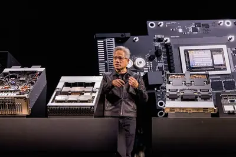
- 科技新報 TechNews 記憶體成本攀升，NVIDIA 明年起調漲 AI 伺服器價格、漲幅逾 15%